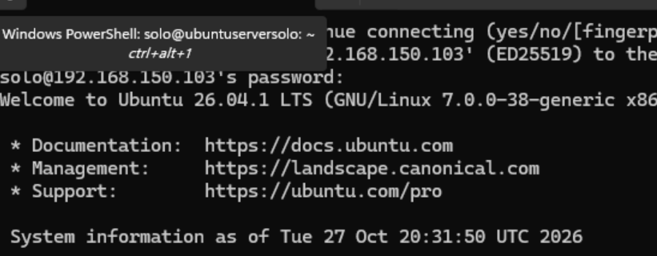
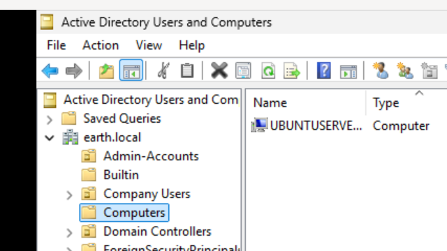

Joining the Ubuntu Server to Active Directory
With the Ubuntu Server built, I wanted to join it to my earth.local domain so that domain accounts could sign in to it, the same way they do on my Windows workstations.
1. Connecting over SSH
Next I connected to my server from the Windows DC via SSH.
On the server I ran ip a and noted down the IP address for the server. On the DC, I opened PowerShell and ran:
ssh server_username@server_ip
I was asked if I trusted the host I wanted to connect to, and I said yes. I was then prompted to enter the server password, and then I was in.

2. Checking DNS and Time
Then I ran the following commands:
resolvectl status— the DNS server in the output was my DC's IP.-
resolvectl query earth.local— I got an error:earth.local: resolve call failed: No appropriate name servers or networks for name found -
timedatectl— the clock output aligned with my DC and host device.
The domain would not resolve, even with the DC as the DNS server
This failed because .local is reserved for multicast DNS (mDNS). Linux treats a .local name as something to be found on the local network rather than asked of a DNS server, so by default the resolver does not send .local lookups to a DNS server at all, unless that domain has been explicitly configured.
To complete testing in my current working session, the non-persistent fix was:
sudo resolvectl dns <my network interface> <DC-IP>
sudo resolvectl domain <my network interface> '~earth.local'
Then I reran resolvectl query earth.local, which was successful, resolving the domain name to the DC's IP.
The permanent fix would be to update the netplan config. My plan was to complete the realm join first and make the fix permanent afterwards, but as it turned out, I only completed the realm join after the netplan fix was in place.
3. apt update Failing
I then wanted to install some packages to complete the realm join process. I first ran sudo apt update, and the output had multiple "Temporary failure resolving" and "Failed to fetch" errors.
An online search led me to askubuntu.com, which provided a solution implying that the cause was DNS resolution. The temporary solution for the "Temporary failure resolving" error was to run:
echo "nameserver 8.8.8.8" | sudo tee /etc/resolv.conf > /dev/null
This enters Google's DNS server into the Ubuntu server's DNS resolver config file, allowing me to resolve domains via 8.8.8.8, similar to what I did earlier in the homelab with DNS and Cloudflare's DNS servers.
Running sudo apt update was successful this time around.
In hindsight: a temporary workaround, and the first of two side effects
This worked for getting packages, but it was only ever a temporary solution, not a permanent one. Looking back, the most likely reason internet names stopped resolving is the runtime fix in step 2: setting only ~earth.local on the interface told the resolver to use it for that domain alone, leaving nothing to handle other names. It is the same problem I hit again, and fixed properly, in step 6.
4. Installing the Packages
sudo apt install -y realmd sssd sssd-tools libnss-sss libpam-sss adcli samba-common-bin oddjob oddjob-mkhomedir packagekit
Summary of the packages for realm joining:
Needed for the join itself
realmd: provides therealmcommand, which discovers the domain and runs the join.adcli: does the actual work behindrealm join, such as creating the computer account in AD.samba-common-bin: Samba helper tools thatrealmdcan use during the join.packagekit: letsrealmdinstall any other packages it finds it needs.
Needed so AD users can sign in afterwards
sssd: the service that talks to AD for user and group lookups and authentication.sssd-tools: admin tools for SSSD, such as clearing its cache.libnss-sss: lets commands likeidlook up domain users through SSSD.libpam-sss: lets the login process check domain passwords through SSSD.oddjobandoddjob-mkhomedir: create a home folder the first time a domain user logs in.
5. Discovering the Domain — "No such realm found"
realm discover earth.local
This failed with no such realm found, which was strange given that resolvectl query earth.local was working.
Resolving the name is not the same as discovering the domain
realm discover doesn't just look up the domain name. It looks up the SRV records a DC registers in DNS (_ldap._tcp.earth.local).
In hindsight: the second side effect of the 8.8.8.8 workaround
resolvectl query asks the system resolver service directly, so it was still using the DC. Other programs read /etc/resolv.conf, which I had just pointed at 8.8.8.8. A public DNS server knows nothing about earth.local, which would explain why one command could find the domain while realm could not.
A Fix I Tried That Did Not Work
I tried editing /etc/systemd/resolved.conf and adding DNS servers to it:
DNS=8.8.8.8 1.1.1.1 192.168.150.52
This did not resolve the issue.
Finding the Real State
When I came back to it, resolvectl status showed what was going on:
Global
Protocols: -LLMNR -mDNS -DNSOverTLS DNSSEC=no/unsupported
resolv.conf mode: stub
Current DNS Server: 8.8.8.8
DNS Servers: 8.8.8.8 1.1.1.1 192.168.150.52
Link 2 (enp1s0)
Current Scopes: DNS
Protocols: +DefaultRoute -LLMNR -mDNS -DNSOverTLS DNSSEC=no/unsupported
Current DNS Server: 192.168.150.52
DNS Servers: 192.168.150.52
Default Route: yes
Three things stood out:
- The
~earth.localrouting domain was gone. There was noDomains:line underenp1s0, because the runtime setting from step 2 had not survived. Without it,.locallookups were once again not being sent to the DC. - The
DNS=line I added had made public servers global DNS servers, with8.8.8.8as the current one. A public DNS server answers "no such domain" forearth.local, and listing the DC third did not help. - My
/etc/resolv.confchange had not lasted either. The output showsresolv.conf mode: stub, the default, confirming that edit was temporary.
My workarounds had stacked up
Each quick fix solved the error in front of me and left something behind: a runtime setting that disappeared, and public DNS servers that could never answer for my internal domain.
6. The Fix
Undo the resolved.conf change:
sudo sed -i 's/^DNS=/#DNS=/' /etc/systemd/resolved.conf
sudo systemctl restart systemd-resolved
Make the domain setting permanent in netplan (instead of the runtime resolvectl command):
sudo nano /etc/netplan/*.yaml
# This is the network config written by 'subiquity'
network:
ethernets:
enp1s0:
dhcp4: true
match:
macaddress: 52:54:00:fe:70:78
set-name: enp1s0
nameservers:
search: [earth.local]
version: 2
sudo netplan try
Listing earth.local as a search domain is the explicit configuration that allows .local lookups to go to the DC. netplan try applies the change and rolls it back after a timeout unless I confirm it, which protects against locking myself out over SSH.
Verify:
resolvectl status enp1s0
resolvectl query earth.local
resolvectl query --type=SRV _ldap._tcp.earth.local
resolvectl query archive.ubuntu.com
realm discover earth.local
Everything succeeded, including realm discover, except one:
archive.ubuntu.com: resolve call failed: No appropriate name servers or networks for name found
Internet Names Stopped Resolving
That error comes from the server's own resolver rather than from the DC. With the public servers removed, nothing was marked as the route for names outside earth.local, so the query was never sent anywhere.
The fix was to tell the resolver to use this interface for all names, by adding "~." to the search list in netplan:
nameservers:
search: [earth.local, "~."]
followed by sudo netplan try again. Internet names then resolved again, now through the DC, with no public DNS server configured on the Linux server at all.
Reboot Test
Since the earlier runtime fix had been lost, I rebooted the server to verify the netplan settings persisted:
sudo reboot
After the reboot I tested these commands to confirm all was well:
resolvectl status
resolvectl query earth.local
realm discover earth.local
The settings were still in place, the domain still resolved, and realm discover still worked. Only then did I move on to the join itself.
DNS fix confirmed permanent
The settings survived a reboot, so the fix now lives in netplan rather than in a runtime command.
7. Joining the Domain
realm discover earth.local
sudo realm join -U Administrator earth.local
realm list
With DNS sorted, the join itself went through smoothly with no further issues.
Join account
I used the domain Administrator for the join. In a real environment this would be a delegated account with only the right to join computers.
8. Home Folders and Testing a Domain Login
sudo pam-auth-update --enable mkhomedir
id administrator@earth.local
su - administrator@earth.local
mkhomedir creates a home folder the first time a domain user logs in. Domain users sign in using the user@domain form.
9. Confirming on the DC
On the DC, I opened the Active Directory Administrative Center (DSAC) and could see the server listed under Computers.

Ubuntu Server joined to the domain
The server has a computer object in Active Directory, and domain accounts can be looked up and used to sign in on it.
Final Validation Summary
| Test | Result |
|---|---|
| SSH from the DC (PowerShell) to the server | ✅ YES |
| DNS server on the interface is the DC | ✅ YES |
| Clock aligned with the DC | ✅ YES |
earth.local resolving on first check |
❌ Failed — .local not sent to DNS servers by default |
Runtime fix (resolvectl dns / resolvectl domain) |
✅ Worked, but lost later (runtime only) |
sudo apt update |
❌ "Temporary failure resolving" |
8.8.8.8 written to /etc/resolv.conf |
✅ apt update worked — temporary workaround only |
Packages installed (realmd, sssd, adcli and the rest) |
✅ Done |
realm discover earth.local on first attempt |
❌ "No such realm found" |
Adding DNS= servers to resolved.conf |
❌ Did not resolve it |
DNS= line removed, search domain added in netplan |
✅ earth.local, its SRV records and realm discover all working |
| Internet names after removing the public servers | ❌ "No appropriate name servers or networks for name found" |
"~." added to the netplan search list |
✅ Internet names resolving through the DC |
Reboot test: DNS settings and realm discover still working |
✅ YES |
realm join (as Administrator) |
✅ YES, no issues |
Domain user lookup and login (id, su -) |
✅ YES |
| Server visible under Computers in DSAC | ✅ YES |
Key Takeaways
- An AD join on Linux is mostly a DNS exercise. The packages and the join command were quick. Nearly all the time went on getting the server to ask the right DNS server for the right names.
- A
.localAD domain needs explicit configuration on Linux. Having the DC as the DNS server was not enough. The domain had to be listed as a search domain before.locallookups were sent to it. - Resolving the domain name is not enough.
realm discoverrelies on the DC's SRV records, soresolvectl query --type=SRV _ldap._tcp.earth.localis the more useful test. - Public DNS servers should not be mixed in on a domain member. They got
aptworking, but they cannot answer for internal names. The DC should be the DNS server, with forwarding to the internet handled there. - Temporary fixes are for testing a theory, not for leaving in place.
resolvectlchanges and edits to/etc/resolv.confdid not last, and each one hid the real problem for a while. The permanent setting belongs in netplan, applied withnetplan tryand proven with a reboot. - Read the status output before changing config.
resolvectl statusshowed the whole picture in one place, and would have saved me theresolved.confedit.